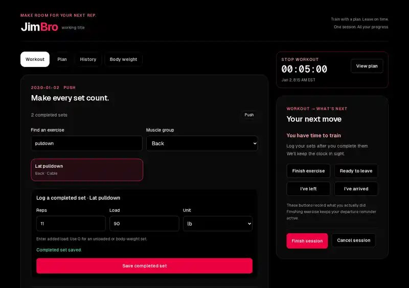
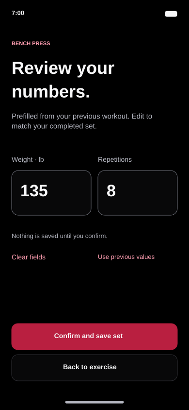
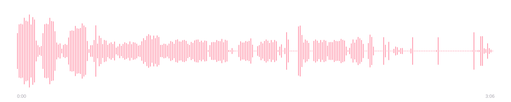
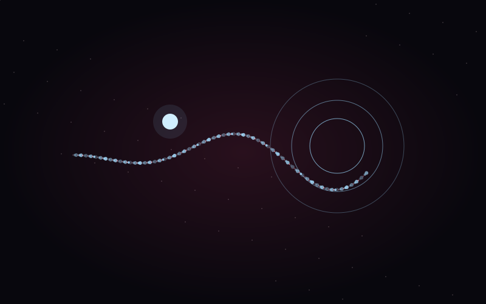
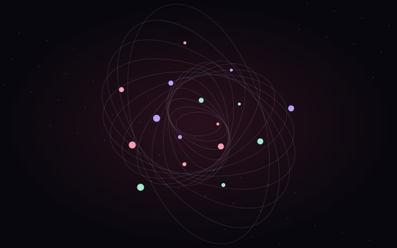
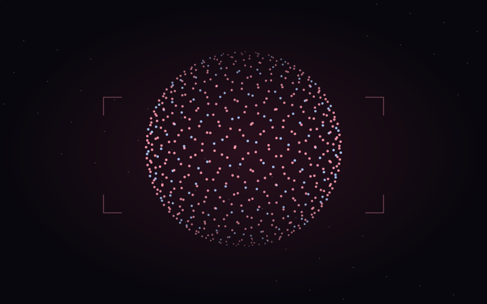
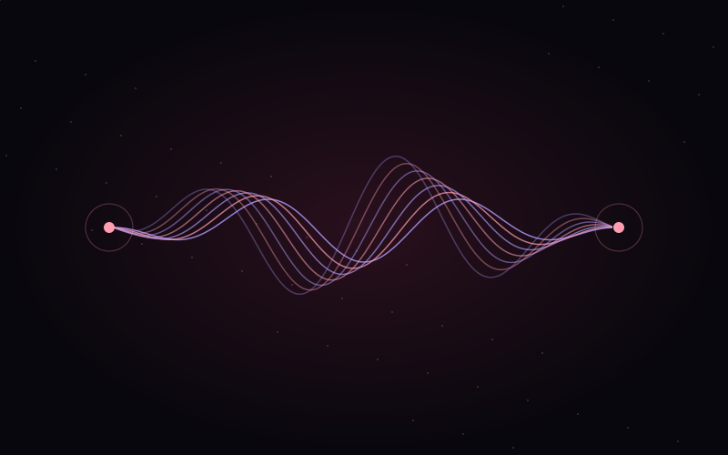
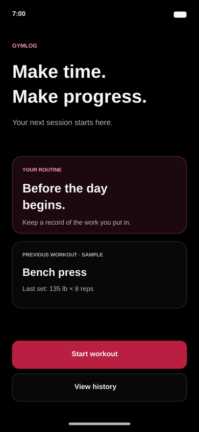
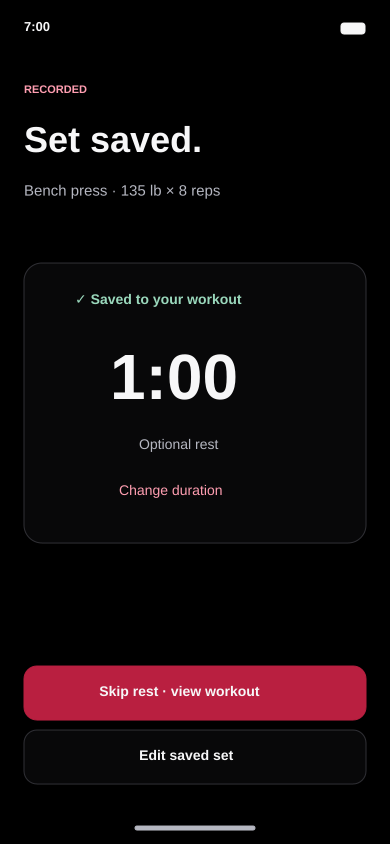

Keep the commitment
01 / PRODUCT DESIGN & DEVELOPMENT
JimBro
LeaveBy meets GymLog
One workout One place to keep track
Exploring the space between a good idea
and an experience that feels right

LeaveBy meets GymLog
One workout One place to keep track

A little less logging
A little more lifting

03:06 SELF-RECORDED SOUNDOne shared space
An evening told through sound

Work out Get ready
Leave on time

P5.JS / 2025A cursor A trail
A little controlled chaos

P5.JS / 2025Click a point
Set a small universe in motion

REACT / 2026Move your hands
Reshape the scene

REACT / 2026An instrument
in the space between your hands
 P5.JS / 2025
P5.JS / 2025Four lives
One more second
SWIPE OR SCROLL TO EXPLORE
Nine projects Exploring everyday experiences
through design, code, movement, and sound
Two earlier projects, brought into one gym companion. LeaveBy protects the time before class or work. GymLog keeps track of completed sets. JimBro connects them through one persistent workout session.


A workout companion that keeps logging simple, so your attention stays on the next set.
A shared evening told through 11 self-recorded sounds. From focused computer work to the small interruptions that lead into winding down.
A simple planner for the transition from a workout to class or work. Start with your next commitment, add time to get ready, commute, and arrive early, then see when to stop and leave.
A glowing particle playground where the cursor becomes an orb, clicks create portals, and a single key shifts the scene from calm to chaos.
Best explored with a mouse and keyboard.
An interactive canvas of orbiting dots. Build new centers of motion, change the palette, and find a rhythm somewhere between stillness and speed.
Best explored with a mouse and keyboard.
A browser-based particle system that turns hand gestures into scale, rotation, and color. Computer vision meets an evolving field of light.
A webcam and WebGL-capable browser are needed for gesture interaction. A desktop or laptop gives the controls more room.
A webcam instrument that maps hand movement to synthesized vocals, bass, and finger-tap drums, with visuals that follow the performance.
Use a webcam and speakers or headphones. The interface is best explored on a desktop or laptop, with both hands well lit.
BROWSER GAME
A survival game built around a simple challenge: guide a wasp through moving circles and stay in play for as long as possible.
Keyboard required for movement. Open it on a desktop or laptop to play.
Harvey RayhansonAlso known as Harvey Chowdhury
Always making
Always figuring something out
I’m Harvey, a media artist, graphic designer, and AI engineer who likes understanding how things work, then imagining what else they could do.
I was the kid with a screwdriver in his pocket, taking things apart to see what was inside. That instinct never really left. I still learn by experimenting, breaking things, fixing them, and asking one more question.
Gaming first drew me toward graphic design and a future in the games industry. From there, I found my way into interactive experiences, photography, video editing, and gaming content through RayBits Gaming. As AI opened up new possibilities, I began exploring how it could bring these interests together and help turn ideas into useful tools.
Today, I work across visual design, media, and AI while continuing to build my programming skills and explore cybersecurity. I’m still discovering where these paths meet. Each project gives me a reason to try something unfamiliar and understand it a little better.
I want technology to fit naturally into everyday life: to help us become more capable, use our time well, and make room for the things that matter.
Outside the screen, I sometimes pick up a guitar or write a poem. This portfolio is a growing collection of what I make, what I’m learning, and the things that keep me curious. There’s more than one side to the work, and to the person behind it.
A project, a question, or a new perspective
Let’s talk about it